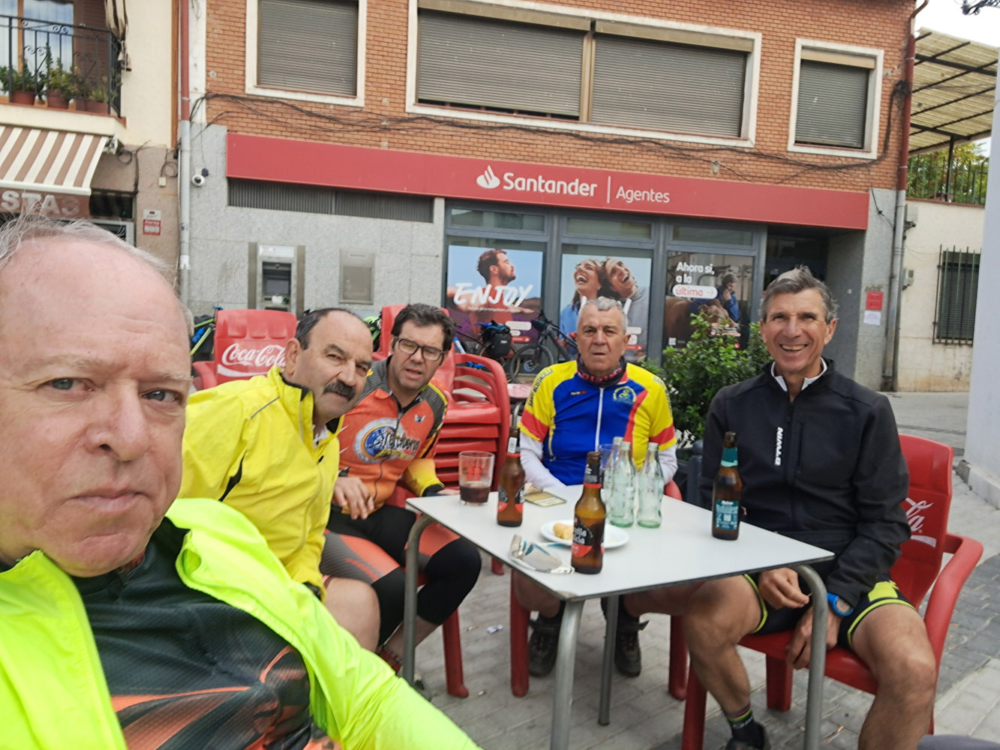
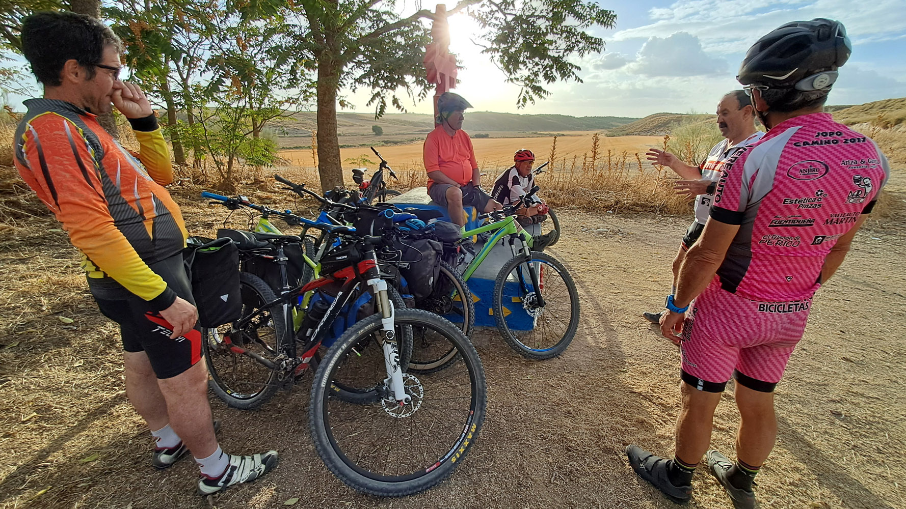
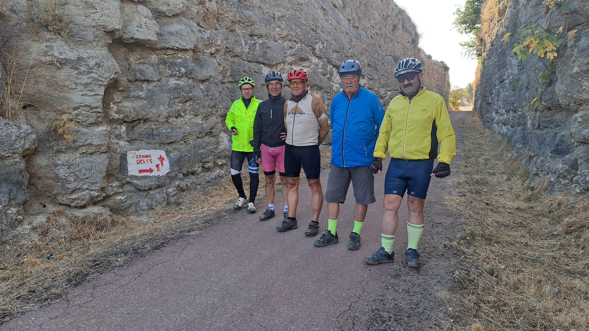
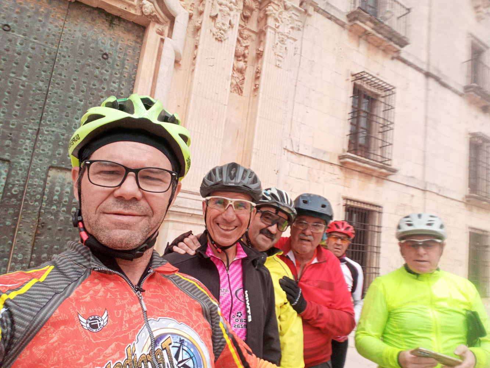
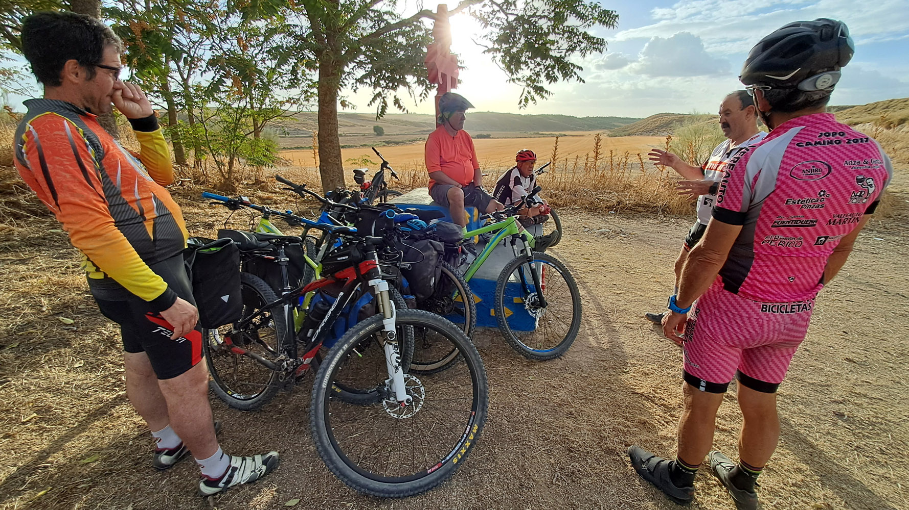
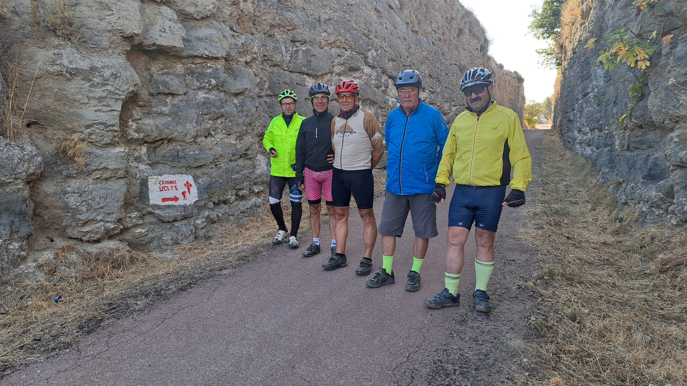
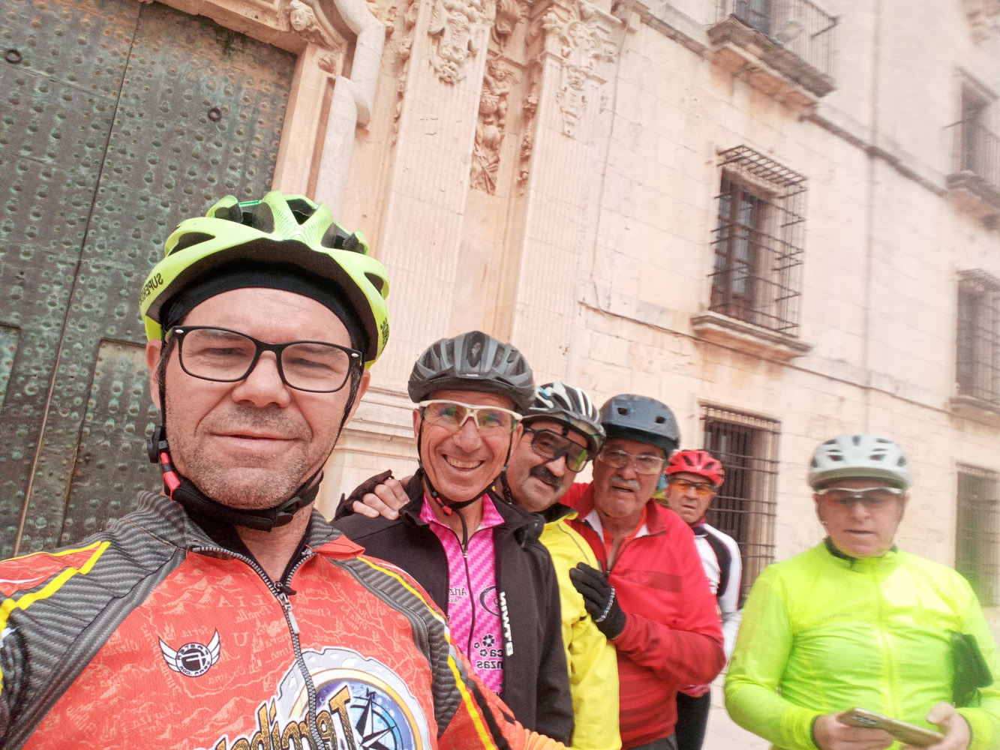

Camino de Ucles

La ultima ruta fue el Camino de Ucles. Esta ruta es una de las más populares entre nuestros miembros, ya que ofrece un recorrido espectacular por el entorno natural de la zona. La ruta tuvo una duración de 4 días.
Aunque se puede realizar en cualquier momento del año, dependiendo del clima, fue realizada en el mes de octubre del año 2025.
Durante la ruta, los participantes tuvieron la oportunidad de disfrutar de paisajes impresionantes, desde montañas hasta valles, y de experimentar la emoción de montar en bicicleta por terrenos variados, incluyendo senderos, caminos rurales y carreteras secundarias.
Además de la belleza natural, el Camino de Ucles también ofrece una rica historia y cultura, con numerosos puntos de interés a lo largo del camino, como iglesias, monasterios y pueblos pintorescos. Los participantes tuvieron la oportunidad de explorar estos lugares y aprender sobre la historia y la cultura de la región.
En resumen, la ruta del Camino de Ucles fue una experiencia inolvidable para todos los participantes, que disfrutaron de la belleza natural, la historia y la cultura de la zona mientras montaban en bicicleta. Fue una oportunidad para conectarse con la naturaleza, hacer ejercicio y compartir momentos especiales con otros amantes del ciclismo.
Esta ruta fue una experiencia única que combinó aventura, naturaleza y comunidad.
Si deseas ver más fotos de esta ruta, puedes visitar nuestra galería de imágenes haciendo clic en el siguiente enlace:
 




